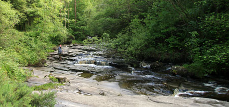

Glenbarrow Looped Walks

Enjoy enchanting forest walks and hidden valleys in the heart of County Laois.
Glenbarrow is the source of the River Barrow, the second longest river in Ireland. The Barrow is one of the three sisters, with the River Nore and the River Suir making up the others. The Barrow enters the sea in Waterford, 120 miles away. Glenbarrow is one of the most scenic parts of the Slieve Bloom area with its waterfalls and steep valley. The area is very remote and offers the visitor peace and tranquillity. The only sounds to be heard are the crash of the waterfalls and the fast flowing Barrow.
Glenbarrow is a unique forest setting with a beautiful riverside walk. Therefore the terrain can be rough in parts and sometimes wet underfoot, so be prepared with appropriate clothing and footwear.
The area has three way-marked trails. The trails all start at the car park and all follow the river for the first section. The three trails are:
- Old Mill loop
- Eco walk
- Waterfall loop
|  |  |
 |
| Old Mill Loop | Eco Walk | Waterfall Loop |
| Download Map | Download Map | Download Map |